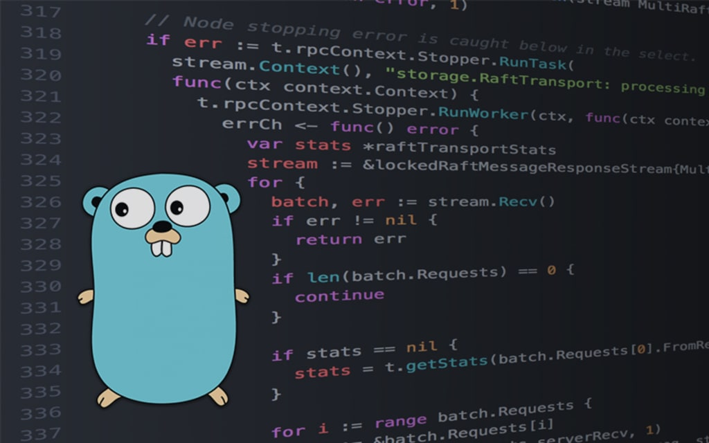

Язык программирования Go был разработан в Google в 2007 году. Основными создателями стали Роберт Грисмер, Роб Пайк и Кен Томпсон. Он стал публично доступным в 2009 году.
Go был создан как ответ на проблемы, с которыми сталкивались разработчики на языках C++ и Java. Его цель — повысить производительность разработки и сделать код проще и читаемее.
Краткий обзор языка
Go — это компилируемый язык, который поддерживает параллелизм и имеет простую синтаксис. Он предлагает мощные встроенные инструменты для разработки.
Особенность
Описание
Примечание
Статическая типизация
Типы определяются во время компиляции
Высокая производительность
Простота
Простой синтаксис с минимальными правилами
Легкость освоения
Параллелизм
Поддержка горутин и каналов
Эффективность
Кроссплатформенность
Работает на разных ОС
Широкий выбор
Преимущества Go:
Высокая производительность
Простота в изучении и использовании
Кроссплатформенность
Недостатки Go:
Отсутствие generics
Ограниченные библиотеки для некоторых задач
Сообщество меньше по сравнению с Java и Python

Примеры кода
package main
import "fmt"
func main() {
fmt.Println("Hello, World!")
}
Пример выше демонстрирует простейшую программу на Go, которая выводит строку "Hello, World!"